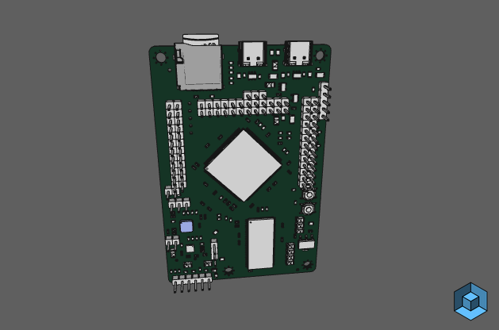

5. Resources
This page aims to collect in-depth documentation and design resources on the Ksoloti hardware.

"My God! Just what sort of mutant creature are we dealing with here?"
--------------------
First of all, here is a read-only backup of the now defunct Axoloti Community Forum. It contains a wealth of information and inspiration for anything Axoloti.
There is a simple search function on the index page.
Some links may be broken - if you get an error trying to open a page or download a file, it may be that the content is there but the link is mangled. You can try searching in the website source on Github.
We have now launched a new forum at ksoloti.discourse.group!
And if you are on Discord, feel free to stop by at the Ksoloti Discord Server. If you have any questions you usually get answers pretty fast there!
--------------------
General documentation of the Ksoloti Core. Its pin header layout has not changed since board revision v0.4. Only minor additions and minor technical changes have been made.
Ksoloti Core pin layout by function (PDF) (SVG)
Hardware comparison of Axoloti Core and Ksoloti Core (PDF)
Ksoloti Core v0.5 schematic (PDF)
Ksoloti Core v0.6 schematic (PDF)
How to connect a PDM microphone (actually up to two) to Ksoloti Core (PNG). You can activate the mic by placing the ksoloti/audio/inconfig digital mic object. The regular audio/in * objects will then output the mic signals.
--------------------

Ksoloti Core inspectable 3D model | Direct download: (STL) (STEP)
This Core PCB mockup and schematic imported to Altium365 Web Viewer might help you with the pinout and dimensions if you plan to build your own shield. Note that this has been auto-converted from Kicad so the fonts and labels are a bit out of shape.
--------------------
Gills stuff.
Ksoloti Gills v0.4 schematic (PDF)
Ksoloti Gills v0.5 schematic (PDF)
Ksoloti Gills CV Expander v0.3 schematic (PDF)
--------------------
Big Genes stuff.
Ksoloti Big Genes v0.6 schematic (PDF) <-- error on the optional PDM mic header!
Ksoloti Big Genes v0.7 schematic (PDF) <-- error on the optional PDM mic header fixed!
Ksoloti Big Genes v0.8 schematic (PDF)
Ksoloti Big Genes Build Guide Blender files (.zip, 100 MB) <-- How the video clips in the build guide were made
--------------------
Some accompanying projects for which Kicad PCB and schematic files are freely available. These are provided as is, or as a starting point to create your own design. For example, Alt Circuits' K-Control Mini is based on the shield template below.
The designs are tested and working; However, I do not take any responsibility for and do not guarantee safety and correctness of these designs. Always double check yourself! Let me know if you have any questions!
Shield Template project (Kicad 6+) for Ksoloti Core v0.5 or above (link to repo)
Power MIDI board project (Kicad 6+), Gerbers, BOM and placement files (link to repo)
Audio jack board project (Kicad 6+), Gerbers, BOM and placement files (link to repo)
--------------------
Original Axoloti Core schematics for reference.